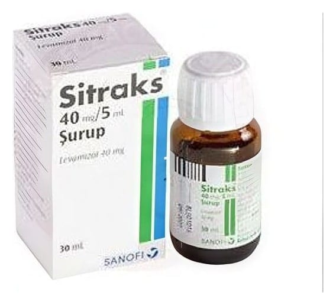

Sitraks 40 mg/5 ml Şurup, 30 ml

Ne için kullanılır
KT · Bölüm 1• SİTRAKS, berrak sarı renkli şuruptur. 30 ml’lik cam şişede sunulmaktadır. • SİTRAKS etkin madde olarak levamizol hidroklorür içerir. • SİTRAKS Ascaris lumbricoides adı verilen barsak solucanı, Necator americanus ve Ancylostoma duodenale adı verilen kancalı kurtlarının, Enterobius vermicularis adı verilen kıl kurdunun Trichuris trichuria, Strongyloides stercoralis ve Trichostrongylus colubriformis adı verilen barsak parazitlerinin tedavisinde kullanılır.